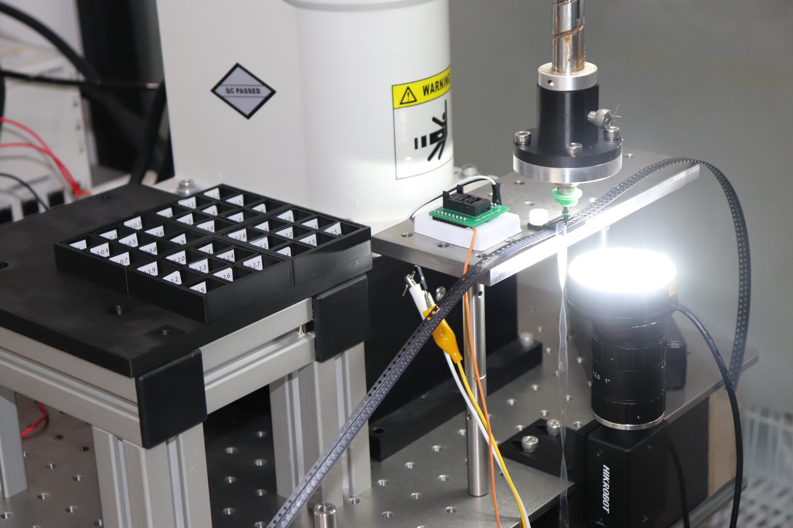

公司简介 Company Profile
上海复乐思仪器有限公司（Shanghai Foloe Instrument Co., Ltd.）成立于2021年，是一家专注于单台设备和组件开发的高科技企业。公司综合机器视觉、图像识别、人工智能算法、精密运动控制、材料加工以及微电子芯片制造与先进器件封装等多领域技术，提供高性价比的系统集成解决方案。
公司以「精密制造 · 智能检测 · 科学仪器」为业务方向，围绕半导体测试探针产业链与科研检测需求，形成了三大产品线：智能化高精度加工检测设备、专用控制板卡与工业控制软件、科学仪器与设备，为客户提供精准、可靠、高效的解决方案。
企业定位
专注于单台设备和组件开发，综合多领域技术提供高性价比系统集成解决方案。以技术创新驱动高端制造，为客户提供精准、可靠、高效的解决方案。
核心技术栈
机器视觉 · 图像识别 · 人工智能算法；精密运动控制 · 材料加工；微电子芯片制造 · 先进器件封装。

核心团队 Core Team
陶
陶鑫
总经理 · 负责技术与产品开发
复旦大学 材料物理与化学专业；曾就任于上海瞻芯半导体、橙河微系统；主导开发多款微纳金属3D打印机与数码显微镜产品。
龚
龚大卫
复旦大学 物理学博士
曾任复旦大学表面物理国家重点实验室副教授，韩国/美国博士后研究经历；2003年进入工业界，历任上海先进半导体高级工程师及器件与设计部经理、斯达半导体技术副总裁、中航微电子技术总监、中电科国基南方集团高级技术专家。
核心技术栈 Core Technology
视
机器视觉 · 图像识别 · AI算法
机器视觉自动识别、图像识别与人工智能算法深度融合，实现智能检测与精准定位。
控
精密运动控制 · 材料加工
精密运动控制与材料加工技术，装配公差 ≤ 0.01mm，最小零件尺寸 ≤ 0.05mm。
芯
微电子芯片制造 · 先进器件封装
覆盖微电子芯片制造与先进器件封装环节，服务半导体测试与封装产业。